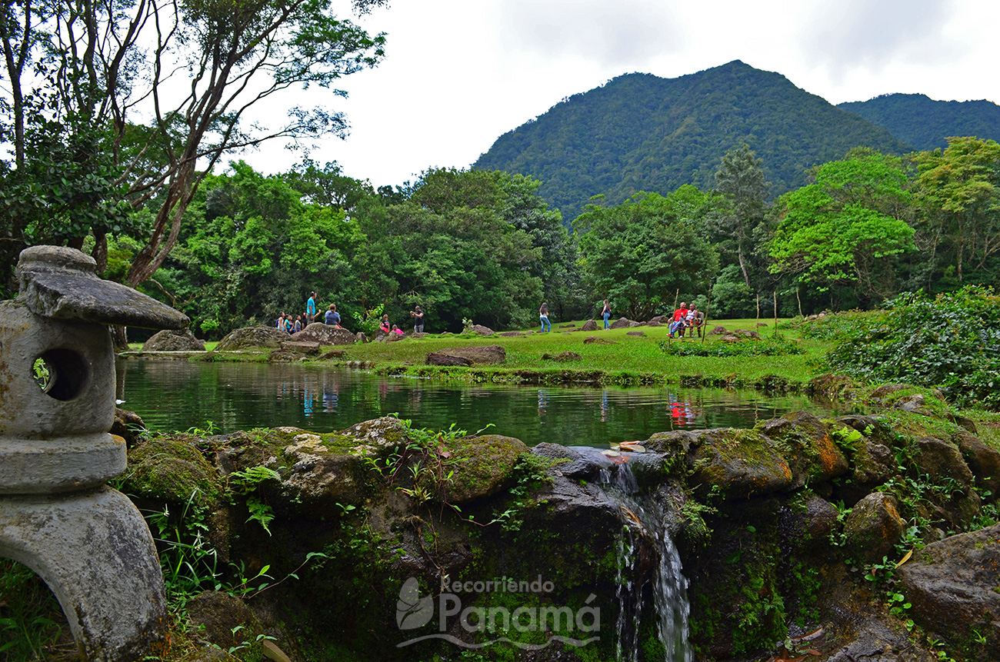

El Valle de Antón

Naturaleza, cultura y aventura en la provincia de Coclé
Un destino natural de Panamá
El Valle de Antón es una comunidad ubicada en la provincia de Coclé, rodeada de montañas y
abundante vegetación. Su paisaje, su clima agradable y sus espacios naturales lo convierten en
un lugar apropiado para realizar caminatas, conocer la cultura local y disfrutar de actividades al aire libre.
Este destino se encuentra dentro de una antigua caldera volcánica y posee una gran diversidad de
plantas y animales. Entre sus símbolos naturales se destaca la rana dorada panameña.
Principales atractivos
- La India Dormida.
- El Chorro El Macho.
- El mercado de artesanías y productos locales.
- Los pozos termales.
Recorrido recomendado
- Llegar temprano y desayunar en el centro del pueblo.
- Visitar un sendero natural o el Chorro El Macho.
- Recorrer el mercado de artesanías.
- Almorzar en un restaurante de la localidad.
- Finalizar la visita contemplando el paisaje del valle.
Recomendaciones para la visita
- Utilizar ropa cómoda y calzado apropiado para caminar.
- Llevar agua, protector solar y repelente.
- Depositar los residuos en los lugares indicados.
- Respetar la flora, la fauna y las normas de cada sitio.
Enlaces de Interés